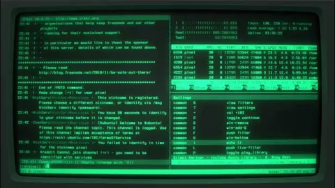

Вознамерился я тут установить Claude Code. Зачем - не спрашивайте, потом как-нибудь расскажу. Почему именно Клод? Тут все просто - из основных вариантов были Курсор и Клод. Курсор больше похож на IDE, Клод - консольный клиент. А я как старый вимер предпочитаю консоль.
В бытность C++-разработчиком я как-то сразу привык к vim-у, а классические ide меня пугали обилием кнопок. С тех пор я считаю, что если ты знаешь язык, вима должно хватать с головой. IDE-шками я пользовался только тогда, когда писал на не-родных языках (питон, джава, го, прочая нечисть), которые плохо знал и не мог нормально писать на них сам. А для плюсов нет ничего милее хорошо настроенного под себя вима (хотя большинство по-прежнему считает, что у вима только два режима работы - бибикать и все портить).
Так вот, поставил Клод, настроил всякие штуки про апи и токены, запустил проверить общую работоспособность - вроде пашет. Времени много не было, пора было работать дальше. А как из него выйти? Правильный способ очевидно на ум не приходил, но пока думал - пальцы как-то сами набрали ":q". И, о чудо, оно сработало. Как позже узнал у ребят, это не самый классический способ выходить из Клода. Но он сработал. Потому что разработчики позаботились о том, чтобы ты мог не задумываясь использовать примерно любой привычный способ, принятый в индустрии, притом явно с таргетингом на целевую аудиторию. Скажу так - это признак хорошего продукта.
Вообще одним из показателей эргономичности продукта можно считать обратную пропорцию к числу раз, которое вам приходится задумываться "а как это сделать". Чем интуитивней интерфейс, тем меньше баттхёрта испытывает пользователь. Понятная навигация, интуитивные контролы, привычные общепринятые лейауты - вот то, что отличает просто хороший UI (красивенько) от продуманного UX (удобненько).
За это, кстати, я люблю UX-гайды нативных платформ (особенно эппловые). Если разработчик соблюдает эти гайды (а часть из них, кажется, вшиты в саму платформу), пользоваться его приложением удобней - всегда есть какие-то общепринятые контролы, которые ты используешь, не задумываясь. Например, свайп слева - назад, потянуть вниз - перезагрузка данных (pull-to-refresh), тап в верхнюю кромку экрана - отлистать в начало, и так далее. Страшно бесит, когда что-то из этого внезапно не работает.
Но еще хуже - когда после обновления логика навигации меняется так, что ты вообще перестаешь понимать, где ты, и как ты сюда попал. Когда не можешь ментально построить карту переходов между экранами - начинает дергаться глаз. Хотя, возможно, это чисто мое ОКР. Тут хочется передать привет Музыке с их последним апдейтом.
В общем, думайте о пользователе и его привычках, соблюдайте гайды и индустриальные традиции, следите за логикой навигации и будут ваши пользователи довольны и счастливы. Всем пять звед на яндекс картах.
